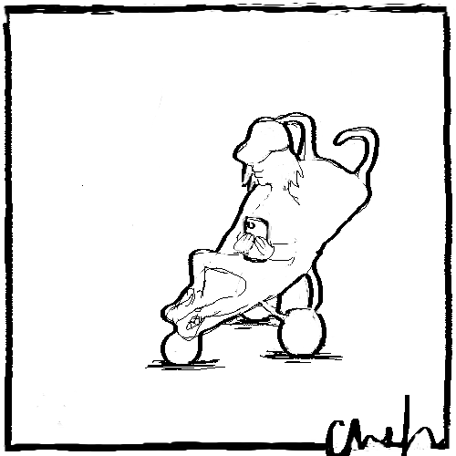

what babies sayThis is not for me said no one ever when learning how to walk. |
value walkingExtend your life with 4,2 years by walking briskly for 60 minutes, 5 days/week. You will earn 19 milliseconds/second. |
|
|  | my questionIs there a correlation between buying stroller and babies gross motor skill development? |
my hypothesis
|
my survey was made with surveymonkey84 parents answered 3 questions:
|
analysis of my surveyWalking before 1 year of age:
|